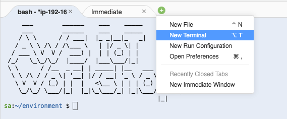

Lab 1. CloudFormation을 활용한 AWS Resource 생성 (25분)
CloudFormation을 활용한 AWS Resource 생성
이 워크샵에 필요한 AWS 리소스를 생성하기 위해 CloudFormation 스택을 제공합니다.
CloudFormation 스택은 AWS Greengrass를 실행하는 데 사용될 EC2 인스턴스를 다른 리소스 중에서 생성합니다. 또한 SageMaker 노트북 인스턴스가 생성되고 부트 스트랩됩니다.
아래 링크 중 하나를 선택하면 스택이 시작될 AWS 콘솔의 CloudFormation 으로 자동 redirection됩니다.
- Launch CloudFormation stack in eu-central-1 (Frankfurt)
- Launch CloudFormation stack in eu-west-1 (Ireland)
- Launch CloudFormation stack in us-east-1 (N. Virginia)
- Launch CloudFormation stack in us-west-2 (Oregon)
CloudFormation 스택은 최소한 다음 리소스를 만듭니다.
- SageMaker에 필요한 S3 버킷
- EC2 및 SageMaker 인스턴스에 퍼블릭 서브넷 + 보안 그룹이있는 VPC
- Greengrass를 실행하고 Lambda 함수를 생성하는 Cloud9 인스턴스
- Jupyter 노트북에서 모델을 정의하는 SageMaker 노트북 인스턴스. 모델 자체는 AWS SageMaker 서비스를 사용하여 학습됩니다.
- Cloud9 인스턴스의 인스턴스 프로파일
- AWS 리소스에 액세스하는 데 필요한 IAM 역할
AWS CloudFormation 콘솔의 Quick create stack 페이지로 리디렉션 된 후 다음 단계를 수행하여 스택을 시작하십시오.
- EC2 Instance Type for Cloud9: (Optional) Cloud9 instance type을 선택합니다. 미리 설정된 m4.large을 사용하면 workshop을 실행하는 데에 충분합니다.
- EC2 Instance Type for Sagemaker: (Optional) SageMaker를 위한 instance type을 선택합니다. 미리 설정된 ml.t2.medium을 사용하면 workshop을 실행하는 데에 충분합니다.
- Capabilities 에서 I acknowledge that AWS CloudFormation might create IAM resources을을 체크합니다.
- Create stack 버튼을 누르고, stack 생성이 완료될 때까지 기다립니다. 10분 정도 소요됩니다.

CloudFormation 콘솔의 스택에 대한 Output 섹션에서 생성 된 리소스에 대한 정보르 찾을 수 있습니다. 언제든지 Output 섹션으로 돌아와서 값을 확인할 수 있습니다.

Cloud9 IDE에 접속
생성하신 GGMLWorkshop스택에서 CloudFormation 콘솔의 스택에 대한 Output 섹션을 확인합니다. Cloud9IDE 항목의 링크에서 오른쪽 마우스를 클릭하여 Open link in new tab선택합니다.

하기 화면과 같은 Cloud9 instance로 이동됩니다.
home folder가 보여지도록 설정
Workshop에서 사용되는 많은 파일이 Cloud9 IDE에 복사되어 있습니다. 기본적으로 홈 폴더의 내용은 표시되지 않습니다. 따라서 이것을 변경해야합니다.

Open a Terminal
Cloud9 IDE에서 terminal (shell)을 열기 위해서 Tab bar에서 +를 클릭하고 New Terminal을 선택합니다.

Copying Files from/to the Cloud9 IDE
Cloud9 IDE로 직접 또는 S3 버킷을 통해 간접적으로 파일을 업로드 할 수 있습니다. 워크숍 중에 나중에 Greengrass Core의 구성 파일을 Cloud9 인스턴스로 복사해야합니다.
file 업로드: File 메뉴에서 Upload Local Files…선택 file 다운로드: filename 에서 오른쪽 마우스 클릭 > Download 클릭
S3
CloudFormation 스택이 S3 버킷을 생성했습니다. CloudFormation 스택의 출력 섹션에서 버킷 이름을 찾을 수 있습니다. “$S3_BUCKET"이라는 셸(shell) 변수에도 버킷 이름이 있습니다.
Cloud9 IDE의 터미널에서 awscli를 사용하여 파일을 버킷에 복사하거나 버킷에서 복사합니다.
bucket에서 파일 복사해 오기
aws s3 cp s3://$S3_BUCKET/my_object .
bucket에 파일 복사하기
aws s3 cp my_file s3://$S3_BUCKET/my_file